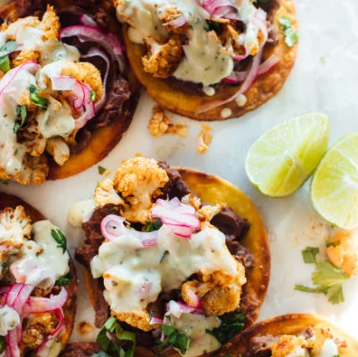

Top Rated Lunch Recipes
Top Rated Lunch RecipesCrispy Rice Salad with
Cucumbers and Herbs
Top Rated Lunch Recipes |
 |
 | |
|
44 REVIEWS/5AVERAGE
|
21 REVIEWS/5AVERAGE
|
73 REVIEWS/SAVERAGE
|
27 REVIEWS/SAVERAGE
|
| Tofu and Brown Rice Lettuce Wraps with Peanut Sauce |
Salmon Tacos with Mango Corn Salsa |
Steph's Chickpea Curry with Spinach and Rice |
Cauliflower Black Bean Tostadas with Queso and Pickled Onion |